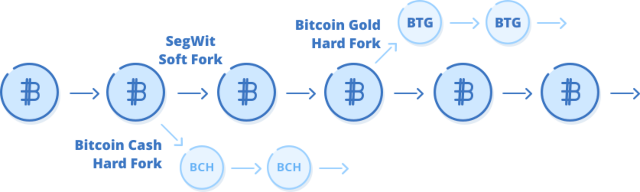

9 Wie bepaalt de regels?
We hebben nu een functioneel en gedistribueerd systeem om waarde te volgen en te verplaatsen. Laten we eens kijken wat we zover hebben gebouwd:
Een gedistribueerd grootboek, waarvan iedere deelnemer een kopie bewaard.
Een loterij-systeem gebaseerd op proof-of-work en aanpassingen in moeilijkheidsgraad om het netwerk te beveiligen tegen gesjoemel en het uitgifteschema consistent te houden.
Een consensussysteem waarmee iedere deelnemer zelfstandig in staat is om de volledige geschiedenis van de blockchain te valideren door gebruik te maken van open source software genaamd de bitcoin client.
Een identificatiesysteem met digitale handtekeningen waarmee naar willekeur een account-achtige mailbox kan worden gecreëerd voor de ontvangst van munten, zonder tussenkomst van een centrale autoriteit.
Nu is het tijd om een van de meest interessante en contra-intuïtieve zaken van bitcoin te tackelen. Waar komen de regels vandaag, hoe worden ze afgedwongen en hoe kunnen ze over tijd veranderen.
9.1 Bitcoin-software
In de vorige hoofdstukken gingen we ervan uit dat iedereen op het netwerk dezelfde regels valideert: ze verwerpen dubbele betalingen, controleren ieder blok op proof-of-work, of ieder blok verwijst naar het vorige blok, en of iedere transactie in ieder blok correct is ondertekend door de eigenaar van het adres, naast een veelvoud aan andere zaken waar men het in de loop der tijd over eens is geworden.
We hebben ook gezegd dat bitcoin open source software is. Open source betekent dat iedereen de code kan lezen, maar ook dat iedereen zijn eigen kopie kan wijzigen. Hoe komen dergelijke wijzigingen in bitcoin?
Bitcoin is een protocol. In computersoftware verwijst deze term naar een set regels die door de software worden gehanteerd. Zolang je binnen de regels blijft, staat het je vrij om de software naar wens te wijzigen. Als we het hebben over mensen die "bitcoin nodes runnen," bedoelen we in feite dat ze software draaien die zich aan het bitcoin protocol houden. Deze software kan met andere bitcoin nodes communiceren, transacties en blokken doorgeven, andere nodes ontdekken om mee te verbinden, enzovoorts.
De daadwerkelijke implementatie van het bitcoinprotocol is aan de gebruiker. Er zijn vele verschillende implementaties van het bitcoinprotocol. De populairste is Bitcoin Core, een uitbreiding van het werk dat door Satoshi Nakamoto werd vrijgegeven.
Er zijn ook andere implementaties, in andere computertalen en onderhouden door andere mensen. Consensus is een essentieel onderdeel van bitcoin. Om ervoor te zorgen dat de consensus in bitcoin behouden blijft, draait het grootste gedeelte van de nodes dezelfde Bitcoin Core software. Zo worden incidentele bugs voorkomen die er anders voor zouden kunnen zorgen dat nodes het niet langer eens zijn welke blokken geldig of juist ongeldig zijn. In feite is er geen enkele volledige specificatie van het bitcoinprotocol, dus de beste manier om nieuwe bitcoin client software te ontwikkelen is om de originele code te lezen en te zorgen dat je er niet te veel vanaf wijkt, zelfs als het een aantal fouten bevat.
9.2 Wie maakt de regels?
De regels die bitcoin vormgeven staan gecodeerd in de Bitcoin Core client. Maar wie bepaalt deze regels? Waarom zeggen we dat bitcoin schaars is als iemand zomaar het limiet kan wijzigen van 21 naar 42 miljoen?
In een gedistribueerd systeem, moeten alle nodes overeenstemmen over de regels. Als jij als miner besluit om de software zo te wijzigen dat je jezelf twee keer zoveel mag belonen bij het minen van een blok dan volgens het huidige beloningsschema is toegestaan, dan zal iedere andere node in het netwerk je blok weigeren. Het wijzigen van de regels is extreem lastig omdat je de duizenden nodes wereldwijd moet overtuigen om de nieuwe regels te hanteren.
Bitcoins bestuursmodel is contra-intuïtief, met name voor mensen uit onze westerse democratie. We zijn gewend om op basis van stemmen te besturen – de meerderheid van mensen kan bepalen, een wet doorvoeren, en hun wil opleggen aan de minderheid. Bitcoins bestuursmodel ligt veel dichter bij anarchie dan bij democratie.
Iedereen die bitcoin-betalingen accepteert, bepaalt voor zichzelf wat zij als bitcoin beschouwen. Als iemand software draait die zegt dat er 21 miljoen bitcoins zijn, en u probeert hen bitcoins te sturen geproduceerd door uw malafide software die deze limiet negeert, zullen uw munten als vals worden gezien en worden geweigerd.
Laten we eens kijken naar de verschillende deelnemers in de bitcoinwereld en hoe ze elkaar in evenwicht houden:
Nodes: Iedere deelnemer in het bitcoinnetwerk runt een node en bepaalt zelf welke software hierop draait. De meeste mensen gebruiken Bitcoin Core. Dit is de implementatie van het bitcoinprotocol die door Satoshi in het leven werd geroepen en verder is doorontwikkeld door honderden onafhankelijke ontwikkelaars en bedrijven van over de hele wereld. Mocht deze software implementatie kwaadaardig blijken, bijvoorbeeld door inflatie te introduceren, dan zal geen enkele node-operator het nog langer draaien. Nodes worden onder andere gedraaid door iedereen die bitcoin accepteert: Handelaren, Exchanges, Wallet-aanbieders, en mensen zoals jij en ik die bitcoin gebruiken voor welke reden dan ook.
Miners: Sommige van deze nodes minen ook; ze brengen nieuwe bitcoin in omloop, nemen transacties op en zorgen ervoor dat het erg kostbaar wordt om het grootboek te manipuleren. Je zou de miners kunnen beschouwen als de enige regelgevers omdat zij de enige zijn die in het grootboek schrijven, maar dat zijn ze niet. Ze volgen de regels die worden bepaald door de nodes die bitcoin accepteren. Zodra miners blokken produceren waarin bijvoorbeeld een extra beloning is opgenomen, dan worden deze verworpen door de andere nodes, met als gevolg dat de extra beloning geen waarde meer vertegenwoordigd. Dus kan je stellen dat iedere gebruiker met een node onderdeel is van een anarchisch overheidsmodel - zij bepalen aan welke regels de munten die zij als bitcoin beschouwen moeten voldoen, en iedere overtreding van deze regels wordt direct afgewezen.
Gebruikers / Investeerders: Gebruikers zijn de mensen die (de valuta) bitcoin kopen en verkopen. Lang niet alle gebruikers runnen hun eigen node, maar vertrouwen op de node van een derde partij, bijvoorbeeld de aanbieder van hun portemonnee, waar deze aanbieder fungeert als soort van proxy voor de wensen en verlangens van hun gebruikers. Gebruikers bepalen de waarde van de munt op de open markt door vraag en aanbod. Als de miners en handelsbeurzen zouden samenspannen om zoiets radicaals als inflatie te implementeren, dan zou de markt de munt die deze nieuwe regels zou volgen waarschijnlijk verwerpen, de prijs zou dalen en de bedrijven al snel zonder werk komen te zitten. Een intolerante minderheid kan de originele munt dus altijd zelfstandig in leven houden.
Ontwikkelaars: De Bitcoin Core software is het meest populaire bitcoin client project. Het heeft een rijk ecosysteem van honderden ’s werelds beste crypto ontwikkelaars en bedrijven aan weten te trekken. Het Bitcoin Core project is uitermate conservatief omdat de software een netwerk draaiende houdt dat ondertussen meer dan $1000 miljard aan waarde vertegenwoordigd. Ieder idee voor grootschalige verandering doorloopt een proces genaamd Bitcoin Improvement Proposal (BIP) 1 en iedere verandering in de code wordt nauwkeurig beoordeeld door collega-ontwikkelaars. Het verbeterproces en de code review is volledig transparant en publiek. Iedereen mag meedoen, commentaar geven of wijzigingen in de code voorstellen. Als bepaalde ontwikkelaars corrupt worden en software ontwikkelen die niemand wil draaien, dan kan een gebruiker simpelweg zelf bepalen om andere software te draaien, een oudere versie te hanteren of besluiten om zelf iets nieuws te beginnen. Hierdoor zijn core developers min of meer gedwongen om veranderingen door te voeren die naar wens is van de gebruikers, anders lopen ze het risico om de status van referentie-implementatie te verliezen.
9.3 Een splitsing van de regels (Forks)
Als het goed is begrijp je nu hoe bitcoin software de afgesproken regels handhaaft en dat mensen zelf mogen bepalen welke software ze willen draaien om de regels af te dwingen waar ze in geloven.
Miners bepalen zelf welke regels ze hanteren als ze blokken produceren, maar zijn gedwongen om hierbij te luisteren naar de wens van de gebruikers. Doen ze dit niet, dan worden de blokken niet geaccepteerd en riskeren ze de blokbeloning.
We weten inmiddels ook dat bitcoin software de blockchain met het meeste proof-of-work accepteert als de enige ware keten en dat er af en toe een splitsing (een zogeheten fork) ontstaat omdat er bij toeval gelijktijdig een blok wordt geproduceerd.
Door de grote verscheidenheid aan deelnemers in het netwerk zijn de regels vanaf het begin zo goed als in steen gebeiteld. Alle protocol upgrades die tot nu toe zijn gedaan zijn achterwaarts compatibel, waardoor de basis consensusregels ook voor niet geupgrade nodes gewaarborgd zijn gebleven.
Laten we nu dan bespreken hoe regels wel kunnen veranderen. Een bewuste fork vindt plaats als een aantal gebruikers en/of miners er voor kiezen om niet langer de bestaande regels van bitcoin hanteren. Er zijn twee verschillende typen forks die zich al hebben voorgedaan: soft-forks, deze zijn wél achterwaarts compatibel, en hard-forks, deze zijn niet achterwaarts compatibel. Laten we eens kijken hoe dat werkt.2
Een soft-fork is een achterwaarts compatibele wijziging in de consensus regels van bitcoin waarbij de regels strenger worden. Dit betekent dat als je een oude node draait, en deze niet upgrade met de nieuwe regels, je node de nieuwe blokken desondanks als geldig zal verklaren. Laten we eens naar een voorbeeld kijken om dat duidelijk te maken.
Op 12 september 2010 werd er een nieuwe regel geïntroduceerd: blokken mogen maximaal 1 MB groot zijn. Deze regel werd geïntroduceerd om spam op de blockchain te voorkomen. Voor deze regel waren blokken van alle groottes toegestaan, maar volgens de nieuwe regel waren alleen kleinere blokken geldig. De regels werden dus strenger, maar merk op dat de nieuwe kleinere blokken ook geldig zijn voor gebruikers die bewust of onbewust geen upgrade doorvoerden.
Een soft-fork is een niet-disruptieve manier om een systeemverbetering door te voeren omdat het de node-operators alle tijd geeft om de software vrijwillig te upgraden. Ook zonder upgrade blijft het mogelijk om (zoals voorheen) de blokken te controleren. De miners zijn daarentegen wel gebonden aan de nieuwe regels. Vanaf het moment dat de miners de upgrade naar 1 MB hadden gemaakt, waren alle blokken max 1 MB in grootte. Users running old versions of the software were none the wiser.
In het geval van een hard-fork wordt een niet achterwaarts compatibele wijziging doorgevoerd. Een hard-fork is een verruiming van de regels waardoor voorheen invalide blokken vanaf dan als valide worden beschouwd. Bestaande nodes die niet upgraden zullen de blokken die volgens de nieuwe regels geproduceerd worden afwijzen omdat ze deze nieuwe blokken als niet valide beschouwen.
Een hard-fork waar bijna alle nodes van het netwerk akkoord mee zijn, zal weinig problemen geven. Iedere node zal de wijziging haast onmiddellijk doorvoeren. De enkele achterblijver wordt later alsnog geforceerd om de software te upgraden, omdat zijn ‘oude’ software geen blokken meer aan de blockchain toevoegt. Ze voldoen immers niet aan de oude regels.
In de praktijk gaan hard-forks nooit zonder slag of stoot. In een volledig gedecentraliseerd en anarchish systeem kan je mensen niet dwingen om de nieuwe regels te hanteren. In Augustus 2017 waren er een aantal mensen die niet zo blij waren met de hoge transactiekosten op het bitcoin netwerk. bitcoin had als gevolg van de soft-fork in 2010 een regel dat blokken kleiner moesten zijn dan 1 MB. Ze besloten om een blockchain te creëren met grotere blokken. Deze fork werd bekend als Bitcoin Cash.
Bij een hard fork waar geen consensus over is (zoals Bitcoin Cash) en die niet wordt gevolgd door alle miners en nodes, onstaat een nieuwe blockchain. Deze blockchain deelt de geschiedenis met de orginele chain inclusief de bestaande UTXO set (account balances) tot het moment waarop de fork plaatsvindt. Echter, vanaf de splitsing volgt iedere blockchain zijn eigen weg.
Rondom de fork met Bitcoin Cash ontstonden felle discussies wat juist wel en juist niet als de echte bitcoin door mocht gaan. Sommige Bitcoin Cash voorstanders waren van mening dat bitcoin gedefinieerd zou moeten worden door wat 10 jaar geleden door Satoshi in de whitepaper is geschreven. Ze kozen specifieke woorden uit de bitcoin whitepaper om hun punt te bewijzen. Maar op consensus gebaseerde systemen geven geen gehoor aan een beroep op autoriteit. Ze werken door collectieve acties van een groot aantal individuen, zoals de keuze welke software te draaien en welke munt te kopen of verkopen op de open markt.
In het geval van deze fork besloot het merendeel van de nodes - zoals portemonnees, handelsbeurzen en merchants - de software niet te wijzigen omdat de wijziging niet werd gedragen door het overgrote deel van de ontwikkelaars, en een veel kleinere hash-rate om het netwerk te beveiligen.
Het probleem van hard forks is dat ze alleen kunnen slagen als iedereen de overgang maakt Als er te veel achterblijvers zijn, ontstaan er 2 verschillende munten. Dus, bitcoin bleef bitcoin, en Bitcoin Cash werd een andere munt. Aangezien iedereen die bitcoin had voorafgaand aan de fork voor niets Bitcoin Cash kreeg toegekend, besloten velen dit "gratis geld" te verkopen, waardoor de prijs verder omlaag kelderde.
Vandaag bestaan er nog vele andere forks naast bitcoin, zoals Bitcoin SV (een fork van Bticoin Cash), Bitcoin Gold, Bitcoin Diamond en Bitcoin Private. Al deze munten hebben slechts een klein deel van bitcoins hash-rate, weinig ontwikkelaars, en nauwelijks on-chain activiteit en marktvolume. Hun gebrek aan liquiditeit maakt ze het ideale slachtoffer voor pump en dumps; een snelle prijsstijging gevolgd door een spectaculaire en pijnlijke daling. Velen zijn getroffen door portemonnee hacks, 51% attacks en andere rampen. Sommige zijn complete oplichterij, of simpelweg voor gokkers en bijna allemaal een hoge mate van centralisatie. De website forkdrop.io telt op dit moment 74 bitcoin-wannabes.

Vele andere munten gebruiken vergelijkbare code, maar zijn begonnen met een lege blockchain zonder bitcoins transactiegeschiedenis. Voorbeelden hiervan zijn Litcoin en Dogecoin. Dergelijke munten zijn geen bitcoin forks omdat ze niet dezelfde transactiegeschiedenis delen, ookal zouden ze in code vergelijkbaar kunnen zijn.
Een Bitcoinfork heeft geen enkel effect met betrekking tot de limiet van 21 miljoen Bitcoins. Vergelijk het met een wereld waarin de wereldwijde goudvoorraad ligt opgeslagen in het zwaarbewaakte en streng ontworpen Fort Knox. Nu bouw jij een klein en slecht ontworpen hutje, zet er een enkele bewaker voor en noemt het Fort Knox Lite. Je verft wat stenen met bladgoud en stopt ze in het hutje. Daaropvolgend breng je een nieuwsbericht uit om de wereld te vertellen dat je het goud hebt opgesplitst en iedere goudbezitter een equivalente hoeveelheid aan gratis stenen zult toekennen die opgeslagen liggen in je hutje.
Bitcoin wordt inmiddels beveiligd door een groot aantal miners, waardoor een 51% aanval vrijwel onbetaalbaar is geworden. Een fork van Bitcoin met slechts een handjevol miners is daarentegen ontzettend kwetsbaar. De code is waarschijnlijk gebrekkig en gebouwd door een onervaren team van ontwikkelaars, netzoals je hutje. De Bitcoin forks worden dan ook niet geaccepteerd door de bestaande nodes omdat ze breken met de regels van Bitcoin, netzoals iemand een steen met bladgoud ook niet zou accepteren. De productiekosten van de gesplitse munten en stenen zijn verwaarloosbaar, aangezien je ze gratis aan iedere bezitter hebt overhandigd. Daarmee wordt ook de marktinteresse al snel minder.
Nu je nadenkt over de duizenden Bitcoinklonen, allen zonder significante waarde, beschouw de volgende paradox: Bitcoin opsplitsen is eenvoudig en kost je niets. De regels van Bitcoin wijzigen of nieuwe bitcoin creëren is dat allesbehalve. Mocht iemand met beperkte Bitcoinkennis je vragen waarom Bitcoin speciaal is, dan weet je nu wat je kunt antwoorden.
De decentrale aard van het Bitcoin ecosysteem geeft grote voorkeur aan de status quo. Het implementeren van grote veranderingen neemt maanden of jaren in beslag aan het verkrijgen van consensus, discussie en peer review. Dit is van groot belang en wenselijk voor een systeem met als doel om als wereldwijd geld te fungeren. Bitcoin is een delicate dans tussen duizenden deelnemers die allemaal vanuit eigenbelang handelen, en vaak met tegengestelde belangen. Het is een volledig anarchisch vrije-markt systeem waar niemand de baas is.
Lees meer over Bitcoin Core’s ontwikkelingsprocess in blog.lopp.net/who-controls-bitcoin-core-/↩︎